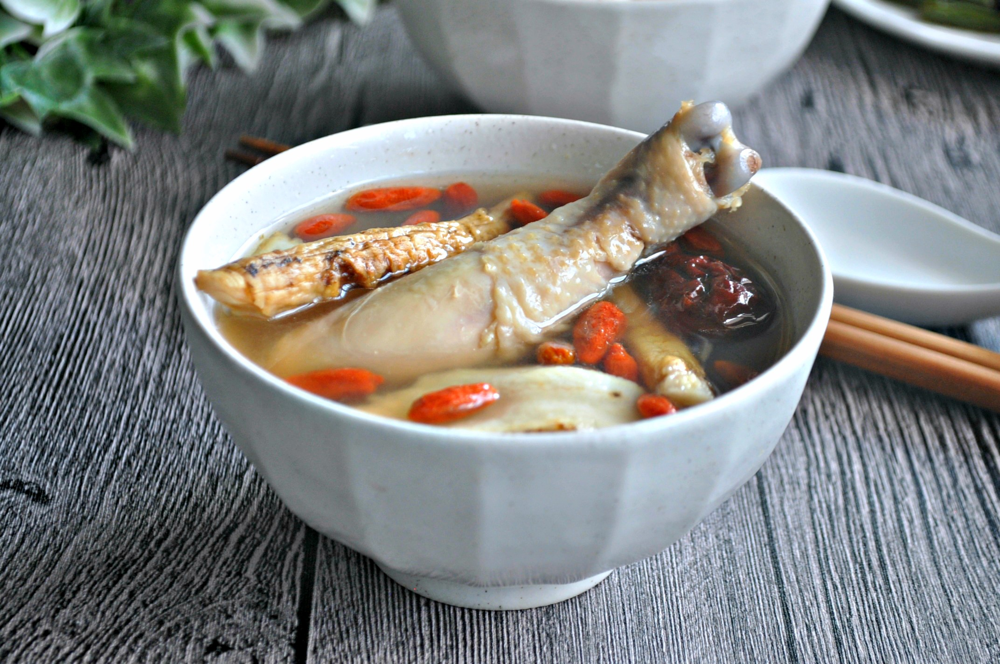

Herbal Soup
Description:
Good for cold days or for when you're feeling weak.
Ingredients:
- 2 Chicken Legs
- Dried Scallops
- Female Ginseng
- Yam Root
- Goji Berries
- Red Dates
- Salt
- White Pepper
- 2 liters of Water
Steps:
- Broil chicken legs for 5 minutes to get rid of dirt
- Add all ingredients into a big pot
- Add 2 liters of water
- Bring to a rapid boil for 30 minutes
- Simmer soup for a minimum of 2 hours, ideally an entire afternoon
- Taste and adjust with seasonings